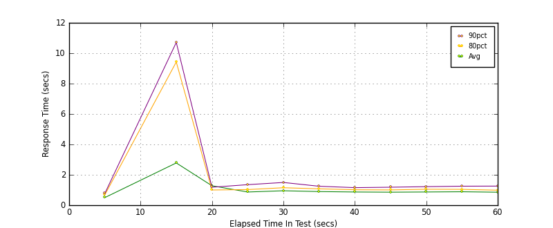

Performance Results Report
Summary
transactions: 55851
errors: 0
run time: 60 secs
rampup: 0 secs
test start: 2017-05-24 18:22:35
test finish: 2017-05-24 18:23:35
time-series interval: 5 secs
workload configuration:
| group name | threads | script name |
|---|
| user_group-21 | 40 | redis_stress.py |
| user_group-20 | 40 | redis_stress.py |
| user_group-23 | 40 | redis_stress.py |
| user_group-22 | 40 | redis_stress.py |
| user_group-25 | 40 | redis_stress.py |
| user_group-24 | 40 | redis_stress.py |
| user_group-2 | 40 | redis_stress.py |
| user_group-3 | 40 | redis_stress.py |
| user_group-1 | 40 | redis_stress.py |
| user_group-6 | 40 | redis_stress.py |
| user_group-7 | 40 | redis_stress.py |
| user_group-4 | 40 | redis_stress.py |
| user_group-5 | 40 | redis_stress.py |
| user_group-8 | 40 | redis_stress.py |
| user_group-9 | 40 | redis_stress.py |
| user_group-10 | 40 | redis_stress.py |
| user_group-11 | 40 | redis_stress.py |
| user_group-12 | 40 | redis_stress.py |
| user_group-13 | 40 | redis_stress.py |
| user_group-14 | 40 | redis_stress.py |
| user_group-15 | 40 | redis_stress.py |
| user_group-16 | 40 | redis_stress.py |
| user_group-17 | 40 | redis_stress.py |
| user_group-18 | 40 | redis_stress.py |
| user_group-19 | 40 | redis_stress.py |
All Transactions
Transaction Response Summary (secs)
| count | min | avg | 80pct | 90pct | 95pct | max | stdev |
|---|
| 55851 | 0.084 | 0.973 | 1.027 | 1.248 | 1.656 | 16.478 | 1.237 |
Interval Details (secs)
| interval | count | rate | min | avg | 80pct | 90pct | 95pct | max | stdev |
|---|
| 1 | 2593 | 518.60 | 0.084 | 0.501 | 0.683 | 0.774 | 0.871 | 1.676 | 0.216 |
| 2 | 0 | 0 | N/A | N/A | N/A | N/A | N/A | N/A | N/A |
| 3 | 2115 | 423.00 | 0.149 | 2.781 | 9.423 | 10.707 | 11.253 | 12.686 | 4.274 |
| 4 | 5130 | 1026.00 | 0.294 | 1.278 | 1.001 | 1.182 | 1.510 | 16.478 | 2.445 |
| 5 | 5544 | 1108.80 | 0.256 | 0.868 | 1.028 | 1.352 | 1.750 | 15.751 | 0.481 |
| 6 | 5258 | 1051.60 | 0.376 | 0.951 | 1.149 | 1.497 | 1.890 | 4.556 | 0.496 |
| 7 | 5586 | 1117.20 | 0.390 | 0.897 | 1.077 | 1.246 | 1.425 | 3.690 | 0.298 |
| 8 | 5777 | 1155.40 | 0.348 | 0.869 | 1.016 | 1.155 | 1.326 | 3.714 | 0.279 |
| 9 | 5759 | 1151.80 | 0.313 | 0.857 | 1.006 | 1.182 | 1.411 | 2.968 | 0.283 |
| 10 | 5758 | 1151.60 | 0.308 | 0.870 | 1.049 | 1.221 | 1.446 | 3.278 | 0.315 |
| 11 | 5711 | 1142.20 | 0.241 | 0.886 | 1.042 | 1.251 | 1.677 | 3.097 | 0.348 |
| 12 | 5617 | 1123.40 | 0.305 | 0.855 | 0.987 | 1.257 | 1.805 | 4.046 | 0.392 |
Graphs
Response Time: 5 sec time-series

Response Time: raw data (all points)
Throughput: 5 sec time-series